24 条导出对照
三模式严格终态均为 23/24；最终文件吞吐最高提高 29.8%
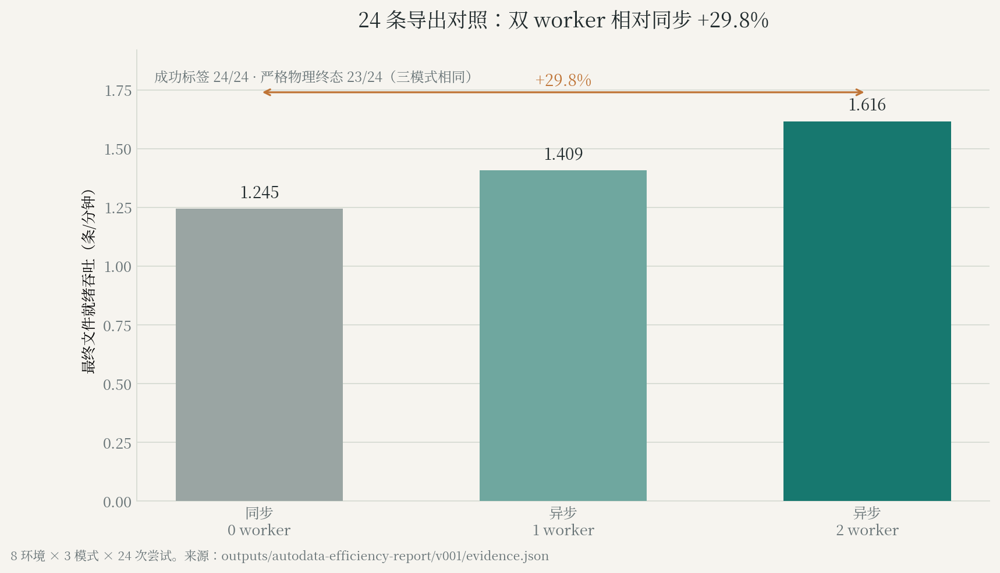
样本：3 模式，各 24 条
口径：最终文件就绪；24 条不是 24 并行环境

16 条成功目标的导出对照
四配置各 17 次尝试、16 次生成成功；auto 提高约 60.2%
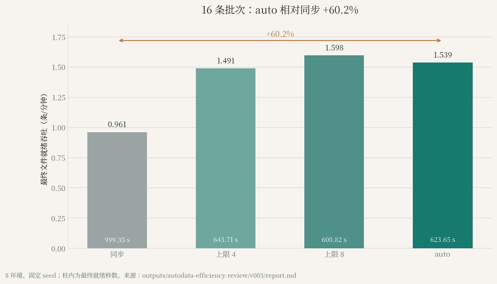
样本：4 配置 × 17 次尝试
口径：最终文件就绪；各保存 16 条终态通过

固定尝试预算产能
20 个单元、74 次尝试；确认 seed 的提高为 34.5%–37.7%
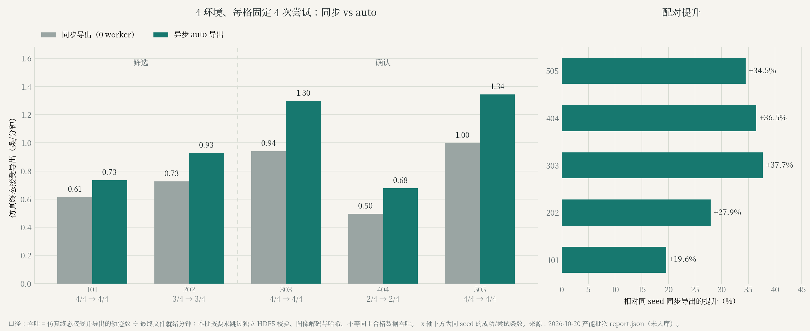
样本：5 seed；74 次尝试
口径：仿真终态接受吞吐；正式批次未独立文件验收

内部耗时归因
8 对动作哈希匹配；导出等待下降 93.8%
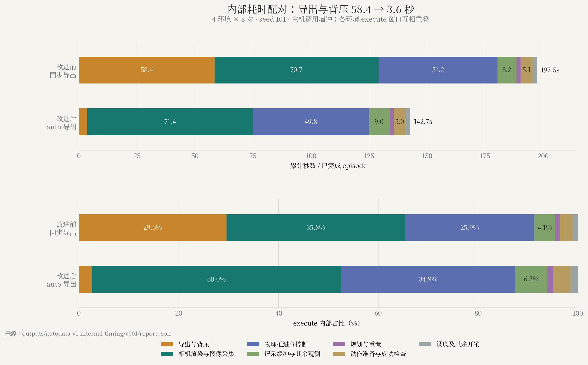
样本：4 环境 × 8 对
口径：主机墙钟归因；不是隔离 GPU kernel 时间


OpenArm 位姿随机化检查
256 个 reset 位姿，9/9 项检查通过

样本：256 reset；9 项检查
口径：随机化生效检查；不是完整任务或策略成功率
G1 视觉随机化
7 段尝试中 6 段成功；纯视觉组合动作与基线一致
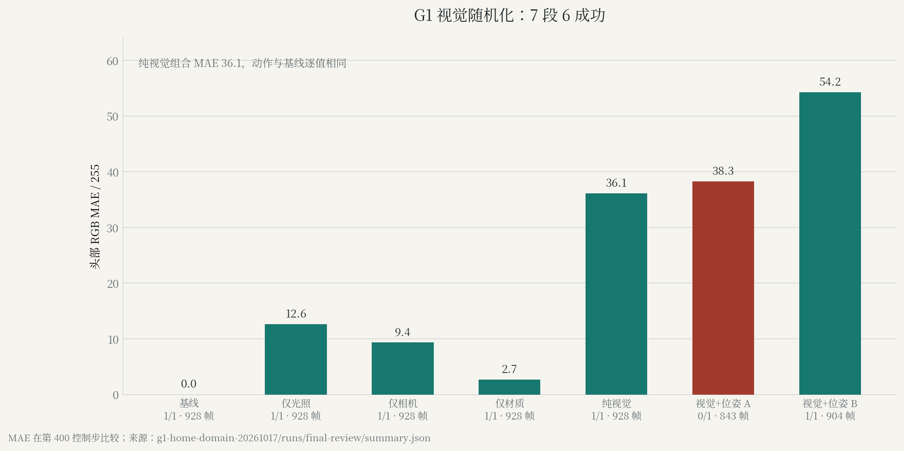
样本：7 段
口径：G1 家庭搬运；尚未验证训练泛化收益

OpenArm HDR 小批生产
5 批各 1 次，均通过已有验收
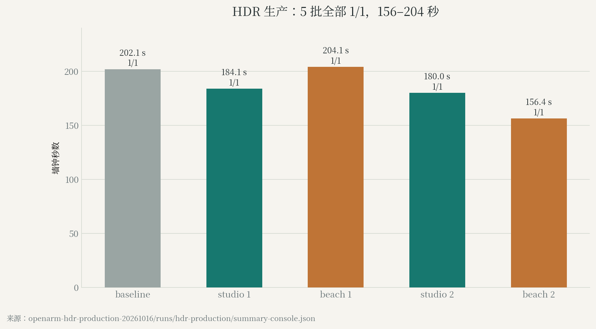
样本：5 批 × 1 次
口径：生产可行性；不同墙钟不构成 HDR 加速证据

cuRobo v1/v2 最小对照
完整任务 v1=5/5，v2=4/5；两版规划请求均 10/10
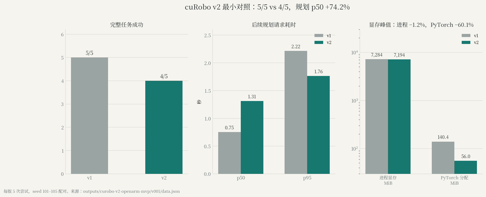
样本：每版 5 任务；9 个后续请求
口径：集成方案对照；请求非独立任务；内部配置不完全等价

cuRobo v2 补跑
v2 生成并保存 16 条，严格终态通过 15 条
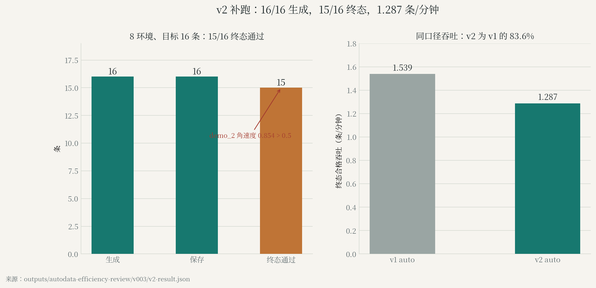
样本：v2 保存 16 条
口径：生成、保存与严格终态分别报告；v1 仍为默认

Franka 配对避障
有障碍时 IK 0/3，cuRobo＋IK 3/3；无障碍均 3/3

样本：4 条件 × 3 配对状态
口径：局部桌面避障；不代表 OpenArm 或整屋避障
香蕉多传感示范
950 帧；双指搬运法向力中位数约 38.7/38.8 N
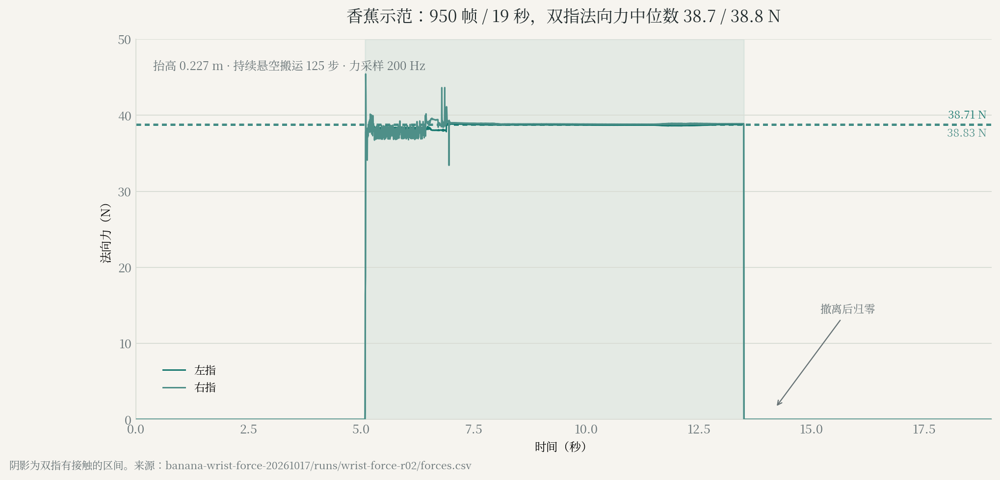
样本：1 条，19 秒
口径：刚体香蕉；腕部为关节反力；不是压伤或力控验证

历史 GPU 并发观测
4–5 进程峰值 70%；均值约 9.4%–32.4%
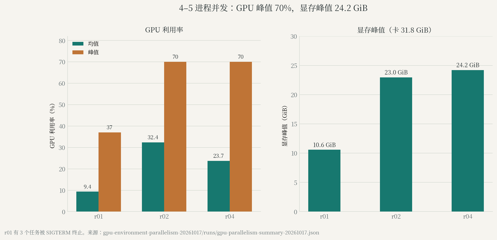
样本：历史混合工作负载
口径：峰值不是持续高利用率；部分轮次含被终止任务

历史 100 条成功目标运行
63 次开始、55 次完成、8 次未完成；最终运行中断
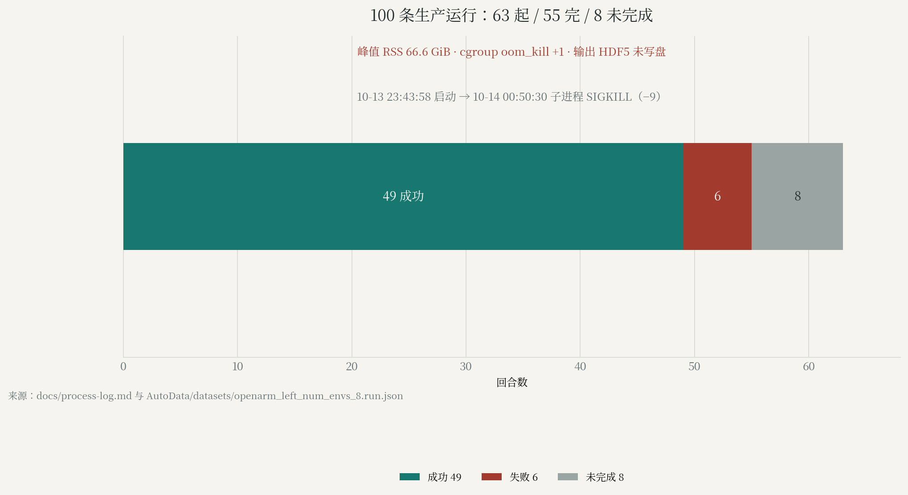
样本：目标 100 条成功；不是固定 100 次尝试
口径：SIGKILL 并伴 cgroup OOM 事件；不能据此确定 OOM 受害进程

24 环境内存准入
有效可用 93.44 GiB，低于保守准入要求 144 GiB
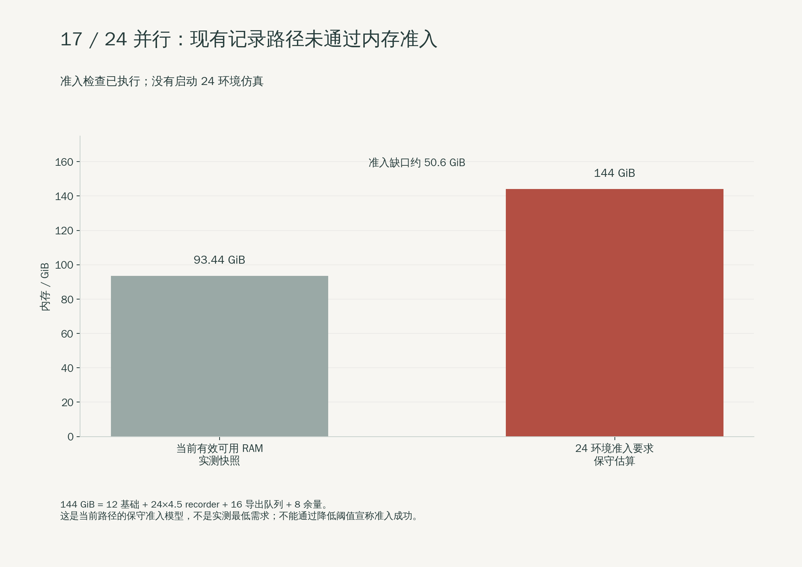
样本：1 次资源快照
口径：资源准入受阻；无 24 环境运行结果


三路相机黑帧检查
右腕 5453/5453 帧近黑；左腕仅 4 个首帧，第三视角为 0
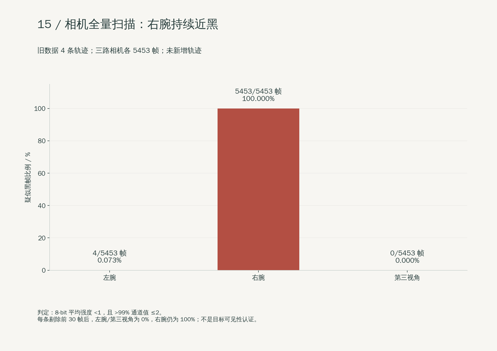
样本：4 条；各相机 5453 帧
口径：全像素扫描；不是多视角训练通过


8 环境隔离导出回归
8 次完成、8 条保存、8 条完整回读；7 条严格终态成功
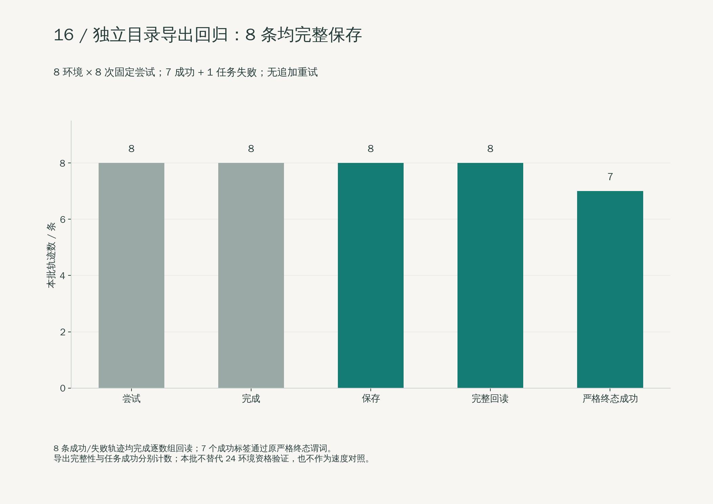
样本：8 次尝试
口径：真实 GPU 回归；不是 24 并行或长期稳定性验证


失败样本终态诊断
线速度约 0.193 m/s、角速度约 6.19 rad/s，均超过原阈值
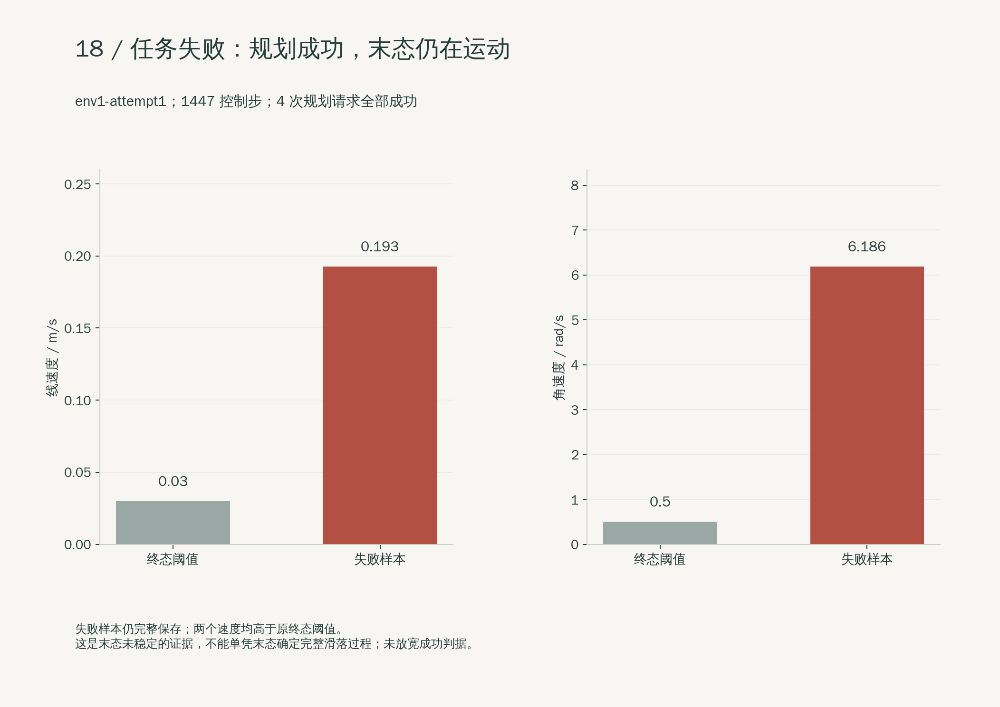
样本：1 个失败样本
口径：物理终态检查；不等于接口或导出失败


LeRobot v3 转换与回读
4 条、5453 帧；数值精确匹配，三路视频完整解码
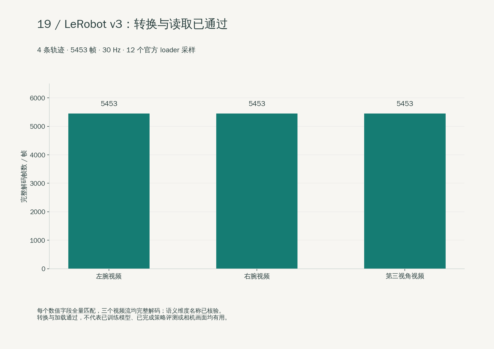
样本：4 条；12 个 loader 采样
口径：CPU 转换与回读；尚未训练或评测学习策略